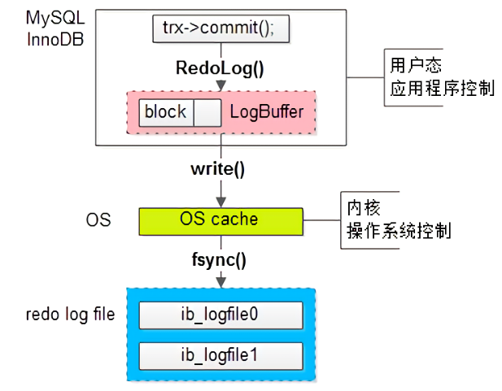

Welcome to yanliang's notes.
Mysql 事务相关
ACID
Mysql 中 InnoDB 支持的四种事务隔离级别名称，以及逐级之间的区别？
隔离级别：四种隔离级别（读未提交、读已提交、可重复读、串行化）
- 读未提交：（在读未提交隔离级别下，事务A可以读取到事务B修改过但未提交的数据）隔离级别最低，会引发脏读、不可重复读和幻读
- 读已提交：读到的都是已提交的数据，会引发不可重复读和幻读
- 可重复读：解决了不可重复读，它确保同一事务的多个实例在并发读取数据 时，会看到同样的数据行。避免了脏读、不可重复读，会引发幻读
- 串行化：所有的增删改查串行执行。它通过强制事务排序，解决相互冲突，从而解决 幻度的问题。这个级别可能导致大量的超时现象的和锁竞争，效率低下。
数据库的事务隔离级别越高，并发问题就越小，但是并发处理能力越差（代价）。读未提交隔离级别最低，并发问题多，但是并发处理能力好。以后使用时，可以根据系统特点来选择一个合适的隔离级别， 比如对不可重复读和幻读并不敏感，更多关心数据库并发处理能力，此时可以使用Read Commited隔离级别。 事务隔离级别，针对Innodb引擎，支持事务的功能。像MyISAM引擎没有关系。
mysql的默认隔离级别是：可重复读。myISAM和InnoDB都支持表级锁，但Innodb默认是行级锁。
oracle支持读已提交和串行化两种隔离级别，默认情况是读已提交
原子性实现
原子性：一个事务必须被视为不可分割的最小工作单位，一个事务中的所有操作要么全部成功提交，要么全部失败回滚，对于一个事务来说不可能只执行其中的部分操作，这就是事务的原子性。
数据库原子性的实现，主要是通过 undo log 进行回滚操作。所谓回滚操作就是当发生错误异常或者显式的执行rollback语句时需要把数据还原到原先的模样。
Undo Log：数据库事务开始之前，会将要修改的记录存放到 Undo 日志里，当事务回滚时或者数据库崩溃时，可以利用 Undo 日志，撤销未提交事务对数据库产生的影响。（每条数据变更(insert/update/delete)操作都伴随一条undo log的生成,并且回滚日志必须先于数据持久化到磁盘上）
Undo Log产生和销毁：Undo Log在事务开始前产生；事务在提交时，并不会立刻删除undo log，innodb会将该事务对应的undo log放入到删除列表中，后面会通过后台线程purge thread进 行回收处理。Undo Log属于逻辑日志，记录一个变化过程。
回滚操作就是要还原到原来的状态，undo log记录了数据被修改前的信息以及新增和被删除的数据信息，根据undo log生成回滚语句，比如：
(1) 如果在回滚日志里有新增数据记录，则生成删除该条的语句
(2) 如果在回滚日志里有删除数据记录，则生成生成该条的语句
(3) 如果在回滚日志里有修改数据记录，则生成修改到原先数据的语句
持久性实现
https://segmentfault.com/a/1190000037671950
持久性：事务一旦提交，其所做的修改会永久保存到数据库中，此时即使系统崩溃修改的数据也不会丢失。
MySQL的表数据是存放在磁盘上的，因此想要存取的时候都要经历磁盘IO,然而即使是使用SSD磁盘IO也是非常消耗性能的。为此，为了提升性能InnoDB提供了缓冲池(Buffer Pool)，Buffer Pool中包含了磁盘数据页的映射，可以当做缓存来使用：
读数据：会首先从缓冲池中读取，如果缓冲池中没有，则从磁盘读取再放入缓冲池；
写数据：会首先写入缓冲池，缓冲池中的数据会定期同步到磁盘中；
上面这种缓冲池的措施虽然在性能方面带来了质的飞跃，但是它也带来了新的问题，当MySQL系统宕机，断电的时候可能会丢数据！！！
因为我们的数据已经提交了，但此时是在缓冲池里头，还没来得及在磁盘持久化，所以我们急需一种机制需要存一下已提交事务的数据，为恢复数据使用。
Redo Log 是为了实现事务的持久性而出现的产物。防止在发生故障的时间点，尚有脏页未写入表 的 IBD 文件中，在重启 MySQL 服务的时候，根据 Redo Log 进行重做，从而达到事务的未入磁盘 数据进行持久化这一特性。
redo log
redo log 也就是重做日志，用来实现事务的持久性，即 ACID 中的 D。我们知道 InnoDB 存储引擎是以页为单位来管理存储空间的，我们的增删改查等操作本质上都是在访问和操作数据页，而在真正访问数据页之前，需要先把磁盘上的数据页读到内存中，具体来说是 Buffer Pool 中。为了保证持久性（就是对于一个已经提交的事务，即使系统发生了崩溃，这个事务对数据库所做的更改也不能丢失），需要把内存中的修改同步回磁盘（fsync），一个简单的做法就是在事务提交之前将该事务所修改的所有页面都刷新到磁盘，但是这个简单粗暴的做法有几个问题。
- 刷新一个完整的数据页过于浪费。有时我们可能仅仅修改了数据页中的一个字节，但是在事务提交之前却不得不将一个完整的数据页从内存刷新到磁盘。
- 随机 IO 刷新比较慢。一个事务可能包含多条语句，即使是一条语句也有可能需要修改多个数据页，而且修改的这些页面也有可能并不相邻，这就意味着将它们刷新到磁盘时，需要进行很多随机 IO，而随机 IO 要比顺序 IO 慢很多。
其实我们没有必要在每次事务提交时就把内存中所有修改过的页面都刷新到磁盘上，我们只需要把修改了哪些东西记录一下即可。比方说某个事务将系统表空间的第 100 号页面中的偏移量为 1000 的那个字节的值由 1 改为了 2，我们只需要记录这个即可。这样即使系统突然崩溃了，在重启之后只要按照上述内容重新更新一下数据页，系统就能恢复该事务对数据库所做的修改。
这样做有很多好处。
- redo 日志所占用的空间很小。存储表空间的 ID、页号、偏移量以及需要更新的值，这些内容所需要的存储空间很小。同时并发的事务共享 redo log 存储空间，它们的 redo log 按照语句的执行顺序，依次交替地记录在一起，以减少日志占用的空间。
- redo 日志其实是批量写入的。事务对数据页所做的更改不会直接写入日志文件，而是先写入 redo log buffer，然后再将 buffer 中的数据以每秒钟一次的频率一并写入日志文件中。
- 同时 redo log 只进行顺序追加的操作，也就是说它使用的是顺序 IO，因此性能更好。
数据丢失的问题
对于随机写性能差的情况，常见的优化方法有两个：
一个是先写日志，将随机写优化为顺序写；
另一个就是将单次写优化为批量写。既然要实现批量写，就需要引入缓存。

redo log 最终落盘的流程为：首先，事务提交时，会将对数据页的修改写入 log buffer。接着只有当 MySQL 发起系统调用写文件时，log buffer 中的数据才会写到系统缓存中。最后在写文件的系统调用完成后，还需要调用 fsync 方法落盘，这也是最慢的一步。如果不进行 flush，那么什么时候落盘是由操作系统决定的。
在 redo log 的三层架构中，MySQL 做了一次批量写优化，操作系统也做了一次批量写优化，这样确实能够提升性能，但是缺点也很明显。MySQL 在事务提交时，将 redo log 写入缓存中后，就会认为事务提交成功。如果 MySQL 在 log buffer 中的数据在写入操作系统缓存之前就崩溃了，那么就会出现数据丢失。同样的，如果在操作系统的缓存没有落盘之前，系统崩溃，那么也会出现数据丢失。
对于有的业务来说，可能允许性能较低但不允许数据丢失；而有的业务可能必须要高性能高吞吐，但是可以能够容忍少量的数据丢失。MySQL 提供了一个 innodb_flush_log_at_trx_commit 参数，通过它可以控制事务提交时 redo log 的刷新策略，从而适应不同的业务需要。
| 值 | 目的 | 描述 |
|---|---|---|
| 0 | 最佳性能 | 此时每隔一秒才会将 log buffer 中的数据批量地写入到操作系统缓存中，同时 MySQL 会主动调用 fsync。如果数据库发生崩溃，这种策略可能会导致 1 秒的数据丢失 |
| 1 | 强一致性 | 每次事务提交时，都会将 log buffer 中的数据写入到操作系统缓存中，同时 MySQL 会主动调用 fsync。这种策略是 MySQL 默认的策略 |
| 2 | 平衡性能与一致性 | 每次事务提交时，都会将 log buffer 中的数据写入到操作系统缓存中，然后每隔一秒主动调用 fsync 将操作系统缓存落盘，由于操作系统也会不定时地调用 fsync，所以在这种策略下，如果操作系统崩溃，那么最多也就丢失 1 秒的数据，而操作系统与数据库相比，出现崩溃的概率更低 |
隔离性实现
https://segmentfault.com/a/1190000025156465#
隔离性（isolation）指的是不同事务先后提交并执行后，最终呈现出来的效果是串行的，也就是说，对于事务来说，它在执行过程中，感知到的数据变化应该只有自己操作引起的，不存在其他事务引发的数据变化。
隔离性解决的是并发事务出现的问题。
隔离性是事务ACID特性里最复杂的一个。在SQL标准里定义了四种隔离级别，每一种级别都规定一个事务中的修改，哪些是事务之间可见的，哪些是不可见的。
Mysql 采用 MVCC + 锁的方式来实现不同的隔离级别。运用的优化思想有读写分离，读读并行，读写并行
我们来看下 InnoDB 的事务具体是怎么实现的（下面的读都指的是非主动加锁的 select）
| 事务隔离级别 | 实现方式 |
|---|---|
| 未提交读（RU） | 事务对当前被读取的数据不加锁，都是当前读； 事务在更新某数据的瞬间（就是发生更新的瞬间），必须先对其加行级共享锁，直到事务结束才释放。 |
| 提交读（RC） | 事务对当前被读取的数据不加锁，且是快照读； 事务在更新某数据的瞬间（就是发生更新的瞬间），必须先对其加行级排他锁（Record），直到事务结束才释放。 通过快照，在这个级别 MySQL 就解决了不可重复读的问题 |
| 可重复读（RR） | 事务对当前被读取的数据不加锁，且是快照读； 事务在更新某数据的瞬间（就是发生更新的瞬间），必须先对其加行级排他锁（Record，GAP，Next-Key），直到事务结束才释放。 通过间隙锁，在这个级别 MySQL 就解决了幻读的问题 |
| 序列化读（S） | 事务在读取数据时，必须先对其加表级共享锁 ，直到事务结束才释放，都是当前读； 事务在更新数据时，必须先对其加表级排他锁 ，直到事务结束才释放。 |
可以看到，InnoDB 通过 MVCC 很好的解决了读写冲突的问题，而且提前一个级别就解决了标准级别下会出现的幻读和不可重复读问题，大大提升了数据库的并发能力。
幻读到底包不包括了delete的情况?
不可重复读：前后多次读取一行，数据内容不一致，针对其他事务的update和delete操作。为了解决这个问题，使用行共享锁，锁定到事务结束（也就是RR级别，当然MySQL使用MVCC在RC级别就解决了这个问题）
幻读：当同一个查询在不同时间生成不同的行集合时就是出现了幻读，针对的是其他事务的insert操作，为了解决这个问题，锁定整个表到事务结束（也就是S级别，当然MySQL使用间隙锁在RR级别就解决了这个问题）
网上很多文章提到幻读和提交读的时候，有的说幻读包括了delete的情况，有的说delete应该属于提交读的问题，那到底真相如何呢？我们实际来看下MySQL的官方文档（如下）
The so-called phantom problem occurs within a transaction when the same query produces different sets of rows at different times. For example, if a SELECT) is executed twice, but returns a row the second time that was not returned the first time, the row is a “phantom” row.
https://dev.mysql.com/doc/refman/5.7/en/innodb-next-key-locking.html
可以看到，幻读针对的是结果集前后发生变化，所以看起来delete的情况应该归为幻读，但是我们实际分析下上面列出的标准SQL在RR级别的实现原理就知道，标准SQL的RR级别是会对查到的数据行加行共享锁，所以这时候其他事务想删除这些数据行其实是做不到的，所以在RR下，不会出现因delete而出现幻读现象，也就是幻读不包含delete的情况。